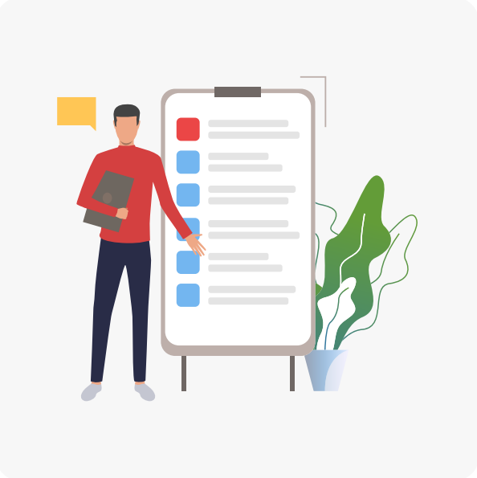

¿Cómo vencer la pereza a la hora de ponerte a estudiar?
Todos, en alguna ocasión, hemos dejado nuestras obligaciones para el último momento.
Este hábito se llama ‘procrastinación’ y es tan común como peligroso para el estudio.

SECCIÓN 2 - ¿Cómo permanecer enfocado mientras se estudia?
Averiguar cómo mantener la concentración mientras se estudia es un reto al
que todos nos enfrentamos. Conoce técnicas que pueden ayudarte a minimizar el
estrés del estudio y a mantenerte centrado en lo que importa.